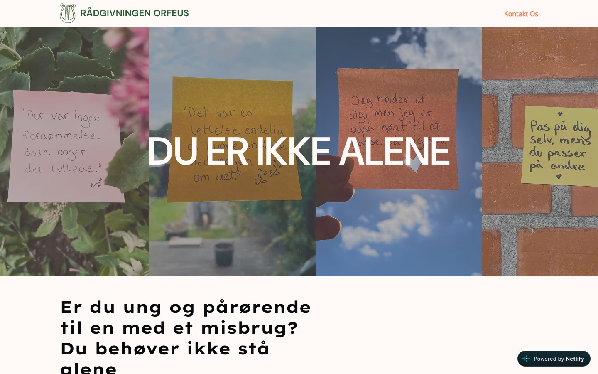
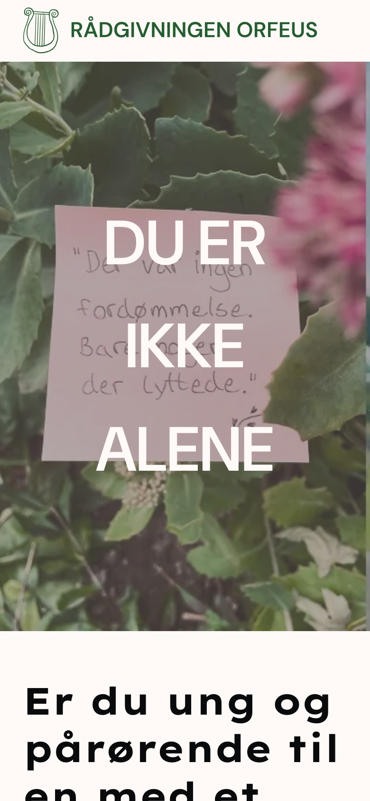
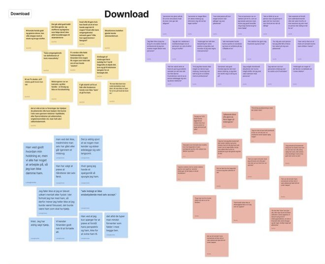
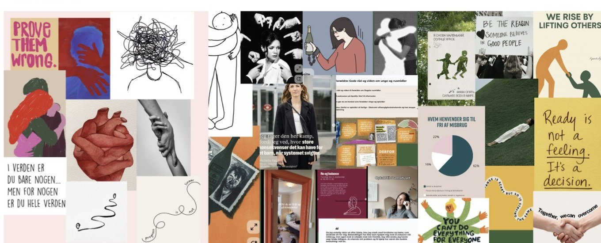
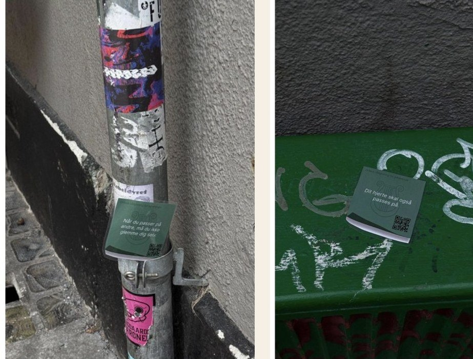
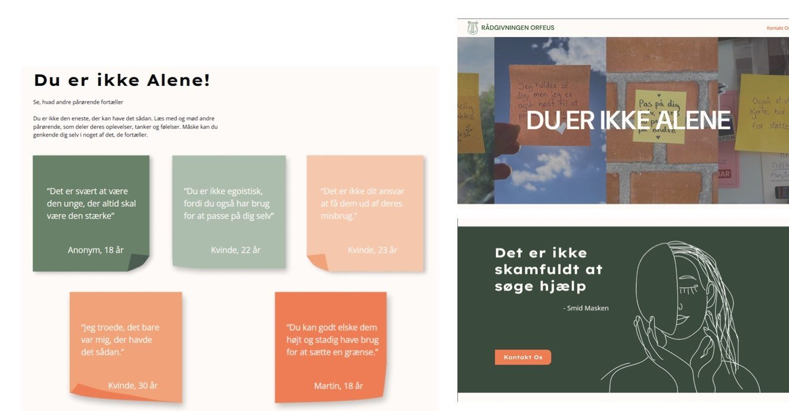

Skoleprojekt · Multimediedesign
Tema 7 · Indhold II · 2. semester
Orfeus
En kampagneside og SoMe-indhold til Rådgivningen Orfeus, der giver gratis og anonym rådgivning til pårørende til mennesker med et misbrug. Målet var at gøre det nemmere for unge pårørende at række ud efter hjælp.
Skoleprojekt – ikke en rigtig hjemmeside. Kampagnen er lavet som skoleopgave med Rådgivningen Orfeus som case. Det er ikke Orfeus' officielle hjemmeside, og nogle tekster er stadig pladsholdere.

Opgave
Tema 7 · Indhold II
Multimediedesign, 2026
Team
Gruppe 2: Frederikke Møller Levin, Karla Nordin Friis Jensen, Laura Sandra Tagholm Hansen, Laurits-Emil Larsen og Sandra Møller Gregersen
Værktøjer
Figma, Astro, HTML og CSS, Netlify og Kanban
Type
Kampagneside, SoMe-indhold, illustrationer og klistermærker
Problemet
Unge pårørende til mennesker med et misbrug føler skam, skyld og ensomhed og ved ikke, hvordan de skal søge hjælp.
Processen
Interviews, affinity mapping, How Might We, Value Proposition Canvas, moodboard, Figma-prototype og brugertest før og efter.
Resultatet
En kampagneside og SoMe-koncept, hvor 100 % af testpersonerne syntes, at opbygningen var overskuelig.
Min rolle
Designproces og visuelt udtryk
Vi var fem i gruppen og arbejdede på tværs af research, design og kode. Mit fokus var designprocessen: at omsætte indsigterne fra research til et visuelt udtryk.
- Idéer og skitser til, hvordan målgruppens følelser kunne vises visuelt.
- Post-it-konceptet, de personlige illustrationer og klistermærkerne.
- Test af designet undervejs og justeringer ud fra feedbacken.
- Discover
- Define
- Develop
- Deliver
Discover · Research
Hvad oplever unge pårørende egentlig?
Vi startede med desk research på Orfeus og lignende organisationer som TUBA, Red Barnet og CAS. TUBA skilte sig ud ved at tale direkte til unge og normalisere problemerne, så det bliver lettere at række ud.
Derefter interviewede vi pårørende om deres relation til personen med misbruget, deres følelser, og hvad der havde gjort det lettere at søge hjælp.

Define · Syntese
Fra citater til indsigter
Vi samlede citater og observationer fra interviewene og sorterede dem med affinity mapping i Figma. Temaerne var løgne, omverdenens manglende forståelse, følelser og behovet for hjælp.

Indsigt 1
Den pårørende bliver glemt
De pårørende føler, at de ikke er berettigede til hjælp, fordi det ikke er dem, der har misbruget.
Derfor: et klart budskab om, at du også må få hjælp.
Indsigt 2
Omverdenen forstår det ikke
Mange frygter at blive dømt og oplever, at andre ikke forstår, hvorfor de bliver i relationen.
Derfor: rigtige citater fra pårørende, så man kan spejle sig i andre.
Indsigt 3
Det er svært at tage første skridt
Målgruppen vil ofte klare det selv og ved ikke, hvad rådgivningen går ud på.
Derfor: tydelige CTA'er og enkel information om det gratis og anonyme tilbud.
Problemstilling
How might we gøre det mere naturligt og mindre skamfuldt at søge hjælp?
Indsigterne blev til fire How Might We-spørgsmål, som vi brugte som retningslinjer resten af projektet. Målgruppen blev unge pårørende under 30 år.
I en Value Proposition Canvas koblede vi målgruppens pains, som skam, tabu og frygt, med det, Orfeus kan tilbyde: genkendelse, konkrete råd og et trygt fællesskab.
1 ud af 5
danskere er potentielt berørt af misbrug, enten selv eller som pårørende. Tallet blev et af sidens bærende budskaber.
Develop · Koncept
"Når deres bytur bliver dit ansvar"
Konceptet bruger bylivet som ramme for de følelser, en pårørende kan stå med: at vente på svar, hente en påvirket ven eller dække over nogen. Indholdet fører målgruppen gennem tre trin: genkendelse, tryghed og handling.
Fra et fælles moodboard valgte vi de beige, brune og grønne farver og abstrakte figurer, så udtrykket stadig føles som Orfeus, bare nyfortolket til en yngre målgruppe.

Designvalg
Trygt, personligt og genkendeligt
- Den grønne fra Orfeus' identitet er bevaret, men suppleret med en orange accentfarve på alle CTA'er, så det er tydeligt, hvor man kan klikke.
- Håndskrevne post-its med citater fra pårørende åbner fortællingen og skaber genkendelse.
- Klik på et citat åbner et kort, personligt indlæg i en popover.
- Klistermærker med QR-kode gør Orfeus synlig der, hvor de unge er: på caféer, spillesteder og uddannelser.

Deliver · Test og iteration
Testet før og efter
Vi lavede først en Likert-test af Orfeus' nuværende hjemmeside. Folk kunne lide farver og æstetik, men navigation, sammenhæng og lysten til at tage kontakt scorede lavt. Det blev fokus i vores prototype.

- Firkantede billeder blev rundeTesten viste, at runde billeder gav mere ro og nærvær.
- Tydeligere vej til kontaktOrange CTA'er og mere information om, hvem rådgivningen er for, og hvordan den foregår.
- Mere tillidPersonlige citater, præsentation af rådgiverne og illustrationer.
100 %
var enige eller meget enige i, at opbygningen var overskuelig.
75 %
var meget enige i, at rådgivningstilbuddet var let at forstå.
75 %
var meget enige i, at førstehåndsindtrykket fik dem til at føle sig trygge ved at søge hjælp.
Likert-test af den færdige prototype. Et lille antal testpersoner, så tallene viser en retning og ikke en statistisk sandhed.
Det lærte jeg
- Rigtige citater fra brugerne er stærkere end noget, vi selv kunne skrive.
- At teste den eksisterende løsning først gav os et klart udgangspunkt at måle på.
- Et følsomt emne kræver en rolig, ikke-dømmende tone i både tekst og design.
Næste gang
- Teste med flere personer fra målgruppen for at få mere sikre resultater.
- Måle kampagnens effekt på SoMe: gemninger, delinger og henvendelser.
Prøv selv
Hele hjemmesiden
Bemærk: skoleprojekt og ikke Orfeus' officielle hjemmeside. Scroll ned gennem siden og klik på post-its'ene.